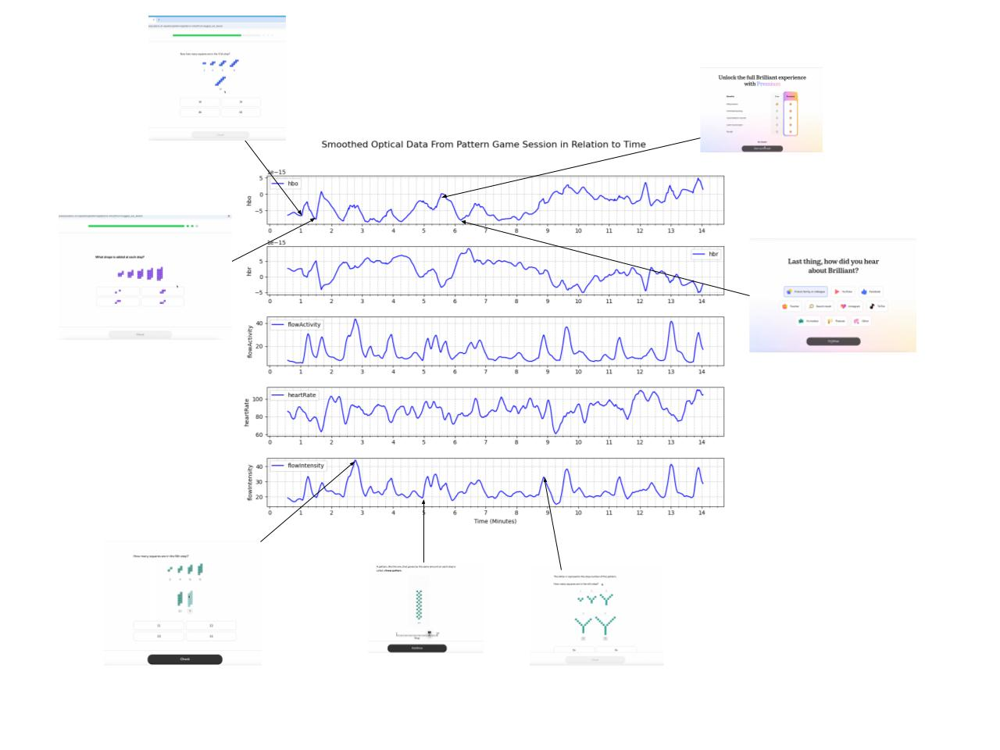

Discussion

- Peak at 1:09 when the game explains its objective.
- Reflection likely caused by course summary.

- Jagged HbO spike matches explanation stage.
- Reader likely synthesizing information.

- Spike at 5:36 from purchase decision.
- Stress-induced cardiovascular response.

- Pattern stabilizes after decision-making.
- Possibly brain cooldown or adaptation.

- HbO highest at 9:36 during level selection.
- Anticipation or muscular response artifact.